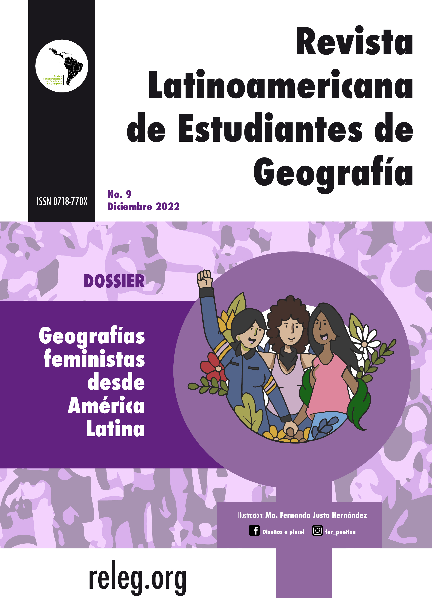

Apresentação
Número atual
Arquivo
Chamadas
Comitê Editorial
Regras editoriais
História e estatísticas
Apresentações
Contato
Español

Autor da imagem: María Fernanda Justo Hernández
https://www.instagram.com/fer_poetiza/
No. 9 (2022)
1
Editorial
DOSSIER
Geografías feministas desde América Latina
8
Mapas de relieves: Comparando experiencias espaciales entre madres e hijas en Bogotá, Colombia
Luna Cárdenas Guevara
Natalia Florián Candela
22
Patriarcado y VBG al interior de la Universidad Nacional de Colombia, sede Bogotá: caracterización y análisis preliminar sobre este conflicto territorial
Iliara Montenegro Moreno
38
Migración, cuidados y espacio: La encrucijada del habitar migrante en la región de Arica, Chile
José Benjamín Ossa Mujíca
48
Problemáticas, desafíos y posibilidades entre la educación geográfica y sexual en Colombia
Diego Felipe Rodríguez Méndez
64
Pensar el trabajo en campo desde el cuidado
Luna Cárdenas Guevara
Natalia Florián Candela
Geraldine Torres Gutiérrez
ENTREVISTAS
74
Retornando a una geografia feminista indígena y latinoamericana. Entrevista con Fernanda Latani
Vanesa Quintana
82
A História da Representatividade Feminina no Corpo Docente do Departamento de Ciências Geográficas da Universidade Federal de Pernambuco: Entrevista com a Dra. Thaís de Lourdes Correia Andrade
Milka Lopes Beserra
Marina Loureiro de Medeiros
COLUMNAS DE OPINIÓN
93
Cuerpo, Territorio y Poder: criminalización del aborto
Karla Hernández Reséndiz
CRÓNICAS
100
Pobreza menstrual: a pobreza do pobre com útero
Isabela Aparecida Lima Mariano
103
As Crônicas de Maria
Layla Rodrigues
CUENTO
106
Alzheimer
Teófilo Teles Pereira de Arvelos
POESÍA
111
Nos han dicho
Maira Colín García
114
Lutas de Maria Rosa do Contestado
Marcia Chmura
Diane Daniela Gemelli
119
Pingados
Bruna Machado da Rocha
131
Normas editoriales